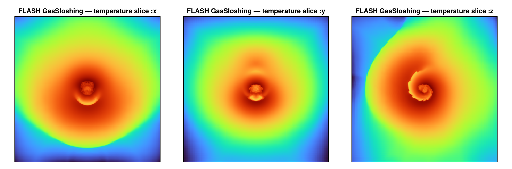

Reading FLASH data (experimental)
Mera's analysis layer is code-blind: it works on a generic uniform/AMR cell list, not on RAMSES file formats. This page adds a frontend for the FLASH code that reads a FLASH HDF5 plot/checkpoint file into the same Mera structs — so getvar, projection, subregion, filterdata, pdf, clumpfind and the rest run on FLASH data unchanged.
3-D Cartesian, hydro and cell-centred MHD fields. FLASH uses PARAMESH block-structured AMR: a fixed nxb×nyb×nzb cell block per tree node, with a per-block refinement level, a physical bounding box, and a node type — only leaf blocks (node type == 1) carry real data and are loaded. The root grid (nblockx·nxb cells per axis) must be a power of two. FLASH data are usually CGS; the defaults treat code units as CGS (see Units).
Usage
The normal getinfo / gethydro entry points auto-detect FLASH from the HDF5 file — which is typically extensionless, named …_hdf5_plt_cnt_NNNN (plot) or …_hdf5_chk_NNNN (checkpoint):
using Mera
info = getinfo(150, "/path/to/flash/run") # finds run/*_hdf5_plt_cnt_0150, simcode = "FLASH"
gas = gethydro(info) # a HydroDataType in Mera's cell convention (leaf cells)
# the whole analysis layer works unchanged:
projection(gas, :sd, :Msol_pc2)
filterdata(gas, Above(:rho, 1e-26))You can also call the frontend explicitly with getinfo_flash / gethydro_flash.
Loading a spatial sub-region
gethydro honours the RAMSES spatial-window arguments xrange/yrange/zrange (with center/range_unit), reading only the leaf blocks that intersect the box (per-block HDF5 hyperslabs) — the same yt-style I/O pruning the Athena++/Chombo readers use:
gas = gethydro(info; xrange=[-0.1, 0.1], yrange=[-0.1, 0.1], zrange=[-0.1, 0.1],
center=[:bc], range_unit=:standard) # central 20 % boxBecause Mera keeps the leaf cells, the window is an exact, hole-free filter; the returned object records it in gas.ranges. Resolution/level is an analysis-time choice (projection(…, res=)).
Data is loaded per type, exactly as for RAMSES — a FLASH plot file is hydro + cell-centred MHD only here, so you call gethydro; gravity/particles are not read in v1.
Worked example: the yt GasSloshing sample
A good test on real data is the GasSloshing snapshot from the yt sample-data collection — a 3-D galaxy-cluster gas-sloshing run (16³ root grid, PARAMESH levels 4–7, 16³-cell blocks, CGS units). getinfo auto-detects it and prints the overview:
julia> info = getinfo(150, "/data/flash_gassloshing/GasSloshing");
Code: FLASH
output: 150 time: 1.1835e17 [code units]
root grid: 16³ (level 4), FLASH lrefine 4:7 ⇒ levels 7:10, boxlen = 7.40544e24
blocks: 2169 (16³ cells each) variables: (rho, temp, p, gpot, divb, vx, vy, vz, bx, by, bz, magp)
-------------------------------------------------------The PARAMESH hierarchy maps to levelmin:levelmax = 7:10; analysis is then the ordinary Mera workflow. GasSloshing's defining feature is its sloshing cold front — a spiral of cool, dense gas in the cluster core. A full line-of-sight projection washes it out, but restricting the integration to a thin slab (a slice) exposes it:
gas = gethydro(info) # ~7.8M leaf cells, in Mera's cell convention
# thin slab along the line of sight ⇒ a temperature slice through the cluster
projection(gas, :temp, res=512, center=[:bc], direction=:z, zrange=[-0.03, 0.03], range_unit=:standard)
Units
FLASH writes data in CGS by default and does not store separate scale factors, so the defaults (unit_* = 1) treat code units as CGS — getvar/projection conversions to :kpc/:Msol/… are then already physical. For a run in scaled units, pass the CGS unit_length/unit_density/ unit_velocity (same convention as getinfo_athena):
info = getinfo_flash(150, "/path/to/run"; unit_length=3.086e21, unit_density=1.67e-24, unit_velocity=1e5)Variable names
FLASH unknown names are mapped to Mera's canonical symbols: dens→:rho, pres→:p, velx/y/z→:vx/:vy/:vz, magx/y/z→:bx/:by/:bz (and temp, gpot, ener→:Etot, eint). Unmapped names (e.g. divb, magp) pass through as-is.
How it maps onto Mera's grid
FLASH refinement level L is 1-based (level 1 = the nblockx·nxb-per-axis root grid). A leaf block at level L contributes cells with
level = log2(nblockx·nxb) + (L − 1)
cx = round((block_xlo − xmin) / dx) + a # a = 1…nxb, 1-based on the level-L cell lattice(and likewise cy, cz, with dx = boxlen / 2^level) — the same 1-based level-lattice indexing the RAMSES/PLUTO/Athena++ readers use. The mapping is verified two ways: a data-free contract test (test/58_flash_reader_tests.jl) checks a value written at a known cell reads back at the right (:level,:cx,:cy,:cz), and on the real sample the leaf cells tile the box exactly (Σ cell volume = boxlen³), proving there are no gaps or overlaps.
Reference readers
This frontend is built to agree with FLASH's own tooling and the community readers, the origin of the format and its selection semantics:
- yt — its
flashfrontend reads FLASH HDF5 lazily through data objects (ds.box,ds.sphere,ds.r[...]), touching only the blocks a region intersects. Mera's spatial selection mirrors that on the leaf-cell list. The GasSloshing sample above comes from the yt sample-data collection. - The FLASH user guide (output formats) — defines the HDF5 layout (
bounding box,refine level,node type,unknown names, the runtime-parameter compounds) this reader parses.
FLASH data are CGS, as both assume — supply the run's units explicitly only if it used scaled units.
See also
getvar,projection,subregion,pdf— the analysis that now runs on FLASH data.- Reading Athena++ data / Reading PLUTO data — the sibling multi-code readers.